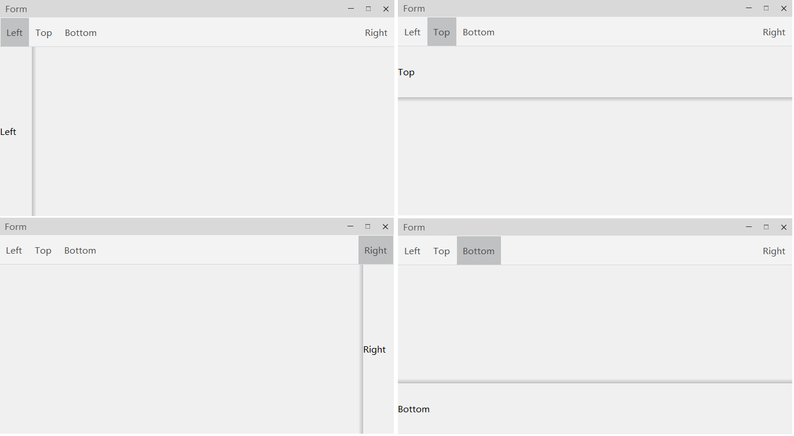

QCtmNavigationSidePane Class
边缘停靠窗口. More...
| Header: | #include <QCtmNavigationSidePane.h> |
| Inherits: | QWidget |
| Inherited By: |
Public Types
| enum class | DockArea { Left, Top, Right, Bottom } |
Public Functions
| QCtmNavigationSidePane(QCtmNavigationSidePane::DockArea area, QCtmNavigationBar *parent) | |
| QCtmNavigationSidePane(QCtmNavigationBar *parent) | |
| virtual | ~QCtmNavigationSidePane() |
| QCtmNavigationSidePane::DockArea | dockArea() const |
| bool | popup() const |
| void | setDockArea(QCtmNavigationSidePane::DockArea area) |
| void | setPopup(bool popup) |
| void | setTitle(const QString &text) |
| void | setTitleBarVisible(bool visible) |
| void | setWidget(QWidget *widget) |
| QString | title() const |
| bool | titleBarIsVisible() const |
| QScrollArea * | viewContainer() const |
| QWidget * | widget() const |
Signals
| void | paneClosed() |
Protected Functions
| QCtmNavigationBar * | navigationBar() const |
| void | setNavigationBar(QCtmNavigationBar *bar) |
| virtual QPoint | smartPosition(QCtmNavigationSidePane::DockArea area) const |
| virtual QSize | smartSize(QCtmNavigationSidePane::DockArea area) const |
Reimplemented Protected Functions
| virtual void | closeEvent(QCloseEvent *event) override |
| virtual bool | eventFilter(QObject *o, QEvent *e) override |
| virtual void | mousePressEvent(QMouseEvent *event) override |
| virtual void | paintEvent(QPaintEvent *event) override |
| virtual void | showEvent(QShowEvent *event) override |
| virtual QSize | sizeHint() const override |
Detailed Description
截图:

Member Type Documentation
enum class QCtmNavigationSidePane::DockArea
停靠位置.
| Constant | Value | Description |
|---|---|---|
QCtmNavigationSidePane::DockArea::Left | 0 | 窗口左侧. |
QCtmNavigationSidePane::DockArea::Top | 1 | 窗口顶部. |
QCtmNavigationSidePane::DockArea::Right | 2 | 窗口右侧. |
QCtmNavigationSidePane::DockArea::Bottom | 3 | 窗口底部. |
Member Function Documentation
QCtmNavigationSidePane::QCtmNavigationSidePane(QCtmNavigationSidePane::DockArea area, QCtmNavigationBar *parent)
构造函数，构造时确定其停靠位置 area, parent.
QCtmNavigationSidePane::QCtmNavigationSidePane(QCtmNavigationBar *parent)
构造函数 parent.
[signal] void QCtmNavigationSidePane::paneClosed()
停靠窗口关闭时发送该信号.
[virtual] QCtmNavigationSidePane::~QCtmNavigationSidePane()
析构函数.
[override virtual protected] void QCtmNavigationSidePane::closeEvent(QCloseEvent *event)
QCtmNavigationSidePane::DockArea QCtmNavigationSidePane::dockArea() const
返回窗口停靠位置.
See also setDockArea.
[override virtual protected] bool QCtmNavigationSidePane::eventFilter(QObject *o, QEvent *e)
Reimplements: QObject::eventFilter(QObject *watched, QEvent *event).
[override virtual protected] void QCtmNavigationSidePane::mousePressEvent(QMouseEvent *event)
[protected] QCtmNavigationBar *QCtmNavigationSidePane::navigationBar() const
返回绑定的 QCtmNavigationBar.
See also setNavigationBar and QCtmNavigationBar.
[override virtual protected] void QCtmNavigationSidePane::paintEvent(QPaintEvent *event)
bool QCtmNavigationSidePane::popup() const
返回窗口是否以Popup方式显示.
See also setPopup.
void QCtmNavigationSidePane::setDockArea(QCtmNavigationSidePane::DockArea area)
设置窗口停靠位置 area.
See also dockArea.
[protected] void QCtmNavigationSidePane::setNavigationBar(QCtmNavigationBar *bar)
绑定 QCtmNavigationBar bar.
See also navigationBar() and QCtmNavigationBar.
void QCtmNavigationSidePane::setPopup(bool popup)
设置窗口是否以Popup方式显示 popup.
See also popup().
void QCtmNavigationSidePane::setTitle(const QString &text)
设置标题栏文字 text.
See also title().
void QCtmNavigationSidePane::setTitleBarVisible(bool visible)
设置标题栏是否可见 visible.
See also titleBarIsVisible().
void QCtmNavigationSidePane::setWidget(QWidget *widget)
设置要显示的窗口 widget.
Note: widget 必须在设置前布局，设置窗口后再布局无效.
See also widget().
[override virtual protected] void QCtmNavigationSidePane::showEvent(QShowEvent *event)
[override virtual protected] QSize QCtmNavigationSidePane::sizeHint() const
[virtual protected] QPoint QCtmNavigationSidePane::smartPosition(QCtmNavigationSidePane::DockArea area) const
根据 area 计算显示位置.
See also smartSize.
[virtual protected] QSize QCtmNavigationSidePane::smartSize(QCtmNavigationSidePane::DockArea area) const
根据 area 自动计算窗口显示大小.
See also smartPosition.
QString QCtmNavigationSidePane::title() const
返回标题栏文字.
See also setTitle.
bool QCtmNavigationSidePane::titleBarIsVisible() const
返回标题栏是否可见.
See also setTitleBarVisible.
QScrollArea *QCtmNavigationSidePane::viewContainer() const
返回容器窗口.
See also widget().
QWidget *QCtmNavigationSidePane::widget() const
返回设置的窗口.
See also setWidget.